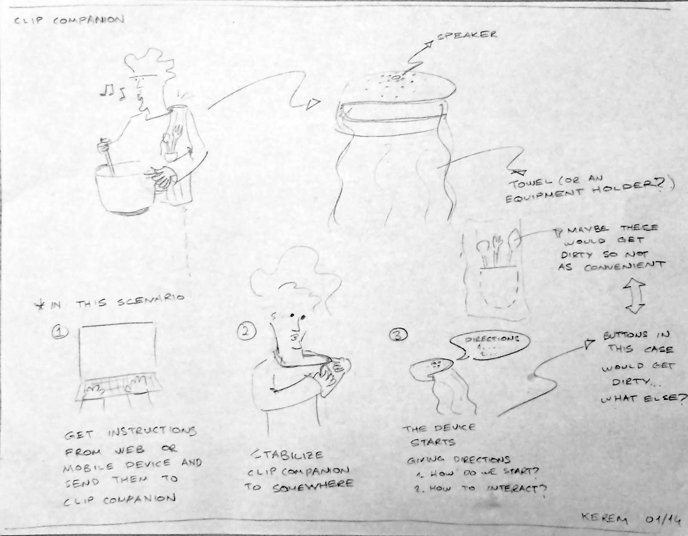
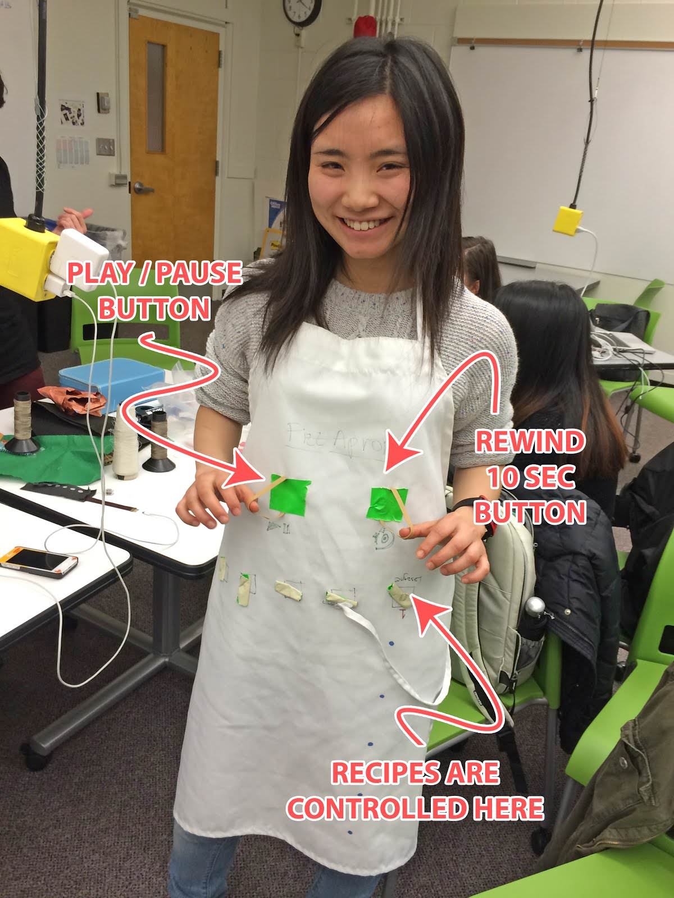

FizzApron

Overview
FizzApron is a smart apron that allows you to share your cooking recipes with your loved ones as if you are right next to them. The recipes are replicated as audio and your loved ones get instructions from your voice and cook the meal. A sender records a recipe to an audio file, uploads/sends it to a loved one. Once a user receives an audio recipe from somebody, she/he wears the FizzApron and cooks the recipe, listening to the audio instruction. In doing so, we are trying not only to explore a smart way to give/get cooking instructions with a wearable computer but also to reframe recipes as a way of communication.
My Role
In this project, I worked as a Design Technologist (lead developer + designer), basically balancing between design specifications and technical feasibility.
Process
The idea for the project was from our initial brainstorming session on the question, “how can we design a wearable device which facilitates the communication among family members?” We specifically brainstormed possible scenarios about everyday activity, such as waking up, taking a bath, cooking and so on. We then found that introducing a wearable to cooking can be a compelling scenario.
We created a low-fidelity prototype of an apron, in order just to try a use case with “role-playing” method. We attached two bands, which were meant to be a controller and a recipe picker. These “interfaces” were all designed to be easily manipulated even while users are cooking and both of their hands are not free or clean.
Then I turned this interaction to higher-fidelity using Arduino and conductive stretch fabric. In the video, one of the handles is working as Play/Pause, and the other working as Rewind 10secs.
We then conducted a quick usability study with our friends. In brief, we found users faced some trouble with audio playback. In some cases, they wanted to fast forward the audio in order to skip some instructions that they didn’t need. In some cases, they wanted to rewind minutes in order to confirm they finished all procedures as the recipe instructed. Reflecting on these findings, we added a fast rewind/forward function. While a user is holding handles, the audio either rewinds or goes forward.
Outcome
We presented FizzApron in HCDE Capstone project exhibits.